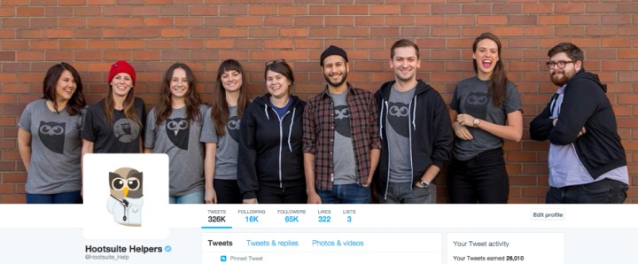

This is part of our interview series on support management. Learn more about early team building, creating a global culture or KPIs.
Kirsty Traill has an impressive track record. Coming to us as the VP of Customer at Hootsuite, during the last 15+ years she has had a career that spans three continents and masters several heavy-hitting disciplines.
Having spent her earlier years with more of a Business Development and Marketing focus, she moved customer-side in 2012 and never looked back. Managing budgets in the millions and teams as hefty as 100+ spanning all corners of the world, there isn’t much she doesn’t know about delivering a customer experience that delights while optimising business operations.
For the last four years, Kirsty has been working as VP of Customer at Hootsuite, one of world’s leading SaaS companies. With more than 16 million users in over 175 countries, she is responsible for managing a global multi-channel team that is over 80 people strong, empowered to delight those customers 24 hours a day, 7 days a week.
This interview was packed full with so many great insights, we turned it into a two-part mini series. Subscribe here to get part two. Part one - this post - covers:
- Nurturing, growing, and training on company and culture globally.
- Managing a global multi-channel support team to still feel connected.
- Motivating and enabling growth for greater team success.
- Support vs. Success and how these impact your business’ bottom line
Before we dive in – we’ve done a number of really interesting interviews with support leaders at Google, Basecamp, and Front. Here, we’ll be touching on many of the same topics. It’s truly fascinating to see the different trends emerging from all these support leaders. I encourage you to check them out :-)
With that – meet Kirsty!
Let’s start simple: what is Hootsuite?
At its core, Hootsuite is a social media management solution that allows customers to manage all of their social media networks from one place so that they are able to connect with their customers to create meaningful relationships.
Perfect. And what do you do there?
I am the VP of Customer, which is an interesting job title – but really, my main responsibility lies in four key areas.
I own the global customer support organization. That team is responsible for post-sale customer support for Hootsuite’s 16 million customers worldwide.

via @Hootsuite_Help
I also own voice of customer – taking all of the different customer feedback, distilling it down to something that is understandable and digestible by the business, and then feeding it back to the organization to make improvements to the business’ process and to drive product innovation.
The third area is customer marketing, which is about using that customer insight to drive scalable, repeatable programs that encourage customers to renew. This should also improve Hootsuite’s retention and lay the groundwork for our teams to cross and upsell customers on other parts of Hootsuite’s portfolio.
via Hootsuite
The last piece is the customer experience. That is largely about mapping the customer journey across all of the different touch points. This starts with defining customer personas and then ensuring that we make improvements to all of those different touch points so that Hootsuite customers have a series of seamless interactions in their engagement with the company.
So to support the customer journey and the way customers interact with Hootsuite itself, what sort of support channels are you using?
We use the standard self-serve channels.. We’ve got a knowledge base, and because we are a social media company, we are big on social support. We also support chat, live chat, email, and phone.
That’s a lot of channels. I imagine you have a lot of people all over the world?
Yes, that is correct.
How many countries are we looking at, or how many people within the team?
Right now, I have 88 people within my team. The vast majority of them are in customer support. We have 80 people in customer support, five in customer experience – which is broken up into customer experience, voice of customer, and product liaison – and three in customer marketing and advocacy.
Hootsuite support team, Vancouver.
In terms of where they are situated globally, the customer support team is the most global of those three teams. Some of our team is located in Vancouver (where Hootsuite has its headquarters), London, and Bucharest – that is a lot of our European language support. We also have teams in Mexico City and the Philippines.
How do you keep all these teams in all these locations connected? How do you maintain that personality, feel, and function?
We have defined our brand tone of voice, which we ensure is reflected on social media. That is pretty standard as part of onboarding to the customer support organization.
One of the big things with social support is that you don’t want it to sound robotic, and you want your employees to be able to speak to customers in a very authentic and engaging manner.
That is one of the advantages of social customer support. But to your point, you also need to make sure that it’s consistent and on brand.
We do have Hootsuite tone of voice brand guidelines so that all of our teams are speaking in the same way. They are trained in that, and they understand the boundaries of what can and can’t be said on a more public forum.
When looking at staffing multi-channel support, do you specialise the team on one channel, like – someone owns social, someone owns email, someone owns live chat, etc.? Or do they run with slashy-type titles – so they would focus on social AND email or social AND live chat, etc.?
The way we are structured is more along the lines of the business and how we think about our customers.
I have an enterprise team that is highly dedicated to focusing on enterprise customers, a technical team that focuses on solving technical customer issues for our self-serve business, and then I have a team that is focused on billing.
And within those teams, within the enterprise team – they are trained on enterprise, that is their specialty. But while they might be doing phone that day, it’s not to say they haven’t been trained on the other channels and could jump in at any time.
Yeah, that is correct. We do train them in all of the different channel disciplines, but we also rotate them through various different shifts because being on the phone all day every day is quite taxing.

Hootsuite support team, Vancouver
We like to give people some balance. If you were on the phone all day yesterday, today you can be on email. Or you may be doing half a day on email and half a day on social.
That way, people get a little bit of variety and they don’t burned out or bored. This gives them enough variety to keep things interesting.
These days, you often see these wonderfully sassy support people having a riot of a time with customers and really injecting personality into the social support experience. Is this sort of interaction encouraged within your team – to have that personality within social support, to have fun with the customer?
It is absolutely encouraged, and I would say that is what really drives the engagement with customers.
Awesome! Let us know if you need assistance again, we’re always happy to help 😄 ^JR pic.twitter.com/oflXmBcR7A — Hootsuite Helpers (@Hootsuite_Help) June 28, 2018
You see a ton of companies using social for support, and you Tweet them with your issue and get a response like, “Thank you for reporting this issue. Please send us a direct message so we can look into it further” or “Please send us an email so that we can look into it further.”
What is the point of offering social customer support if you are not going to actually address customers’ issues through that channel? Asking them to switch channels takes away part of the value of social customer support.
In the case of a support post on a Facebook page, other users will be able to see what the original issue was and they may end up not having to contact you because they can see the response, and it answers their question. This actually allows you to deflect your contacts.
I think doing it in a really fun and engaging way – within the boundaries of your brand guidelines, your social media policies and guidelines, and your tone of voice- is at its core part of the beauty of social customer support.
Coming back to the greater support operation – among all these different teams, in different regions, specialising in different areas of the business, how are you keeping them connected? What’s the culture like globally?
The teams do interact. We operate a follow-the-sun model, which means we are handing off between the regional teams. To connect, all teams use Facebook At Work (Workplace). We use that to drive a lot of that interaction between teams.
People can post on Workplace, and then other people can see what the response was, and we can follow each other and keep up-to-date with what is going on around the company.
We have something like 90% adoption of Workplace across Hootsuite. Our product , sales, and development teams are all on there. It allows people to ask and answer questions in a format that is easy to use because it’s very similar to Facebook, but also other people can see those questions being asked and answered.
Hootsuite support team, Vancouver
It prevents internal bottlenecks and helps to reduce one-way back and forth emails because it’s in a much more public forum – which is great. It’s a fantastic way to engage.
When we set up our office in Mexico City last year, we also offered an opportunity for advocates to apply to participate in a pseudo advocate exchange.
Hi there. Feliz Tuesday everyone! Andrea here, from beautiful Mexico city, more than ready to help with all your Hootsuite questions. ^AF pic.twitter.com/qa6v3nYhh9 — Hootsuite Helpers (@Hootsuite_Help) August 7, 2018
They could go down to Mexico City for six weeks and work with the team down there to get them set up, make sure we enthuse the culture, and undertake a whole lot of knowledge transfer.
That’s another way of helping to drive that culture. We have what we call our “advocate exchange,” which rolls out globally. Every quarter, advocates can nominate each other to be a part of the advocate exchange.
Hang on – quick and perhaps obvious question: What’s an advocate?
Good question! It depends on the context.
We refer to our customer support team as advocates because they advocate on behalf of our customers internally to ensure our customers’ issues are resolved.
But there are also customer advocates – these are customers who are loyal to Hootsuite, so much so that they speak at conferences, on webinars, participate in case studies, reference calls, etc. – all to advocate for Hootsuite to other customers.

via Hootsuite
So when we talk about the advocacy exchange, these are our support team advocates. The program itself is a bit like the exchange programs from when we were in high school, but there are a few rules around it.
You need to have been a part of the team for a minimum of six months, and you have to be hitting more of your targets. Then, the conversation is, “What destination would be a good fit? What’s the value that they will be able to bring to that team? Which of the Hootsuite values do they live in to”
Ultimately, it is a decision by popular vote. Every quarter, someone is sent to work from another office. During that time, they need to conduct training and work with the local team.
It’s a great way of ensuring the advocates understand what the different teams are going through as well as the opportunities and challenges in each of those different locations. It also ensures that we have a really strong culture globally.
The other part of keeping everyone connected and infusing that culture is having a really strong vision, and everyone ultimately buys into that vision.
Within the customer support organization, our vision is to “passionately advocate for our customers and each other by listening and learning. We create one-of-a-kind experiences whilst having fun along the way.”
For everyone in the support organization, it’s part of their onboarding process. Each new hire inherently understands the culture in the support organization and is orientated towards providing that exceptional type of customer support from the beginning.
They understand they are a key part of customer loyalty and retention at Hootsuite, and they are empowered to work along those lines and deliver that in everything they do.
Do you have something like a deck that people go through and say, “This is the culture,” and how do you train on that?
We do. We have a deck which is really the Hootsuite manifesto. It speaks to what our culture is and what our values are. We have four core values at Hootsuite, which lends itself to our culture: Passion for customer success is number one. The next three are: building a better way, leading with humility, and grit in all that we do.
We train on all of those things as a part of the on-boarding process, but the traits need to be there already – and that starts with hiring.
We have customer experience questions baked into our interviews. This allows us to screen candidates based on their customer focus as well as their orientation, commitment, and passion for customers.
As we go through the onboarding process, we focus not only on what is expected of the new employees, but also how we expect them to show up and deliver for our customers, whether they are in a customer-facing role or not.

via Hootsuite
When we are training new employees, we require them to sit with the customer support, customer success, and sales teams to really understand what each of the teams do and how they are showing up for their customers. This demonstrates how committed we really are to our customers and their success.
It’s impossible to deliver an exceptional customer experience without a highly engaged employee base.
To that effect, we measure our employee engagement twice a year. We ask employees a series of questions to get an understanding on what gets in the way of being able to deliver outstanding customer experiences.
From there, we work on action plans to ensure that we making improvements that will essentially enable our employees to deliver those incredible customer experiences.
To be clear: You are sending out a bi-annual questionnaire asking very specific questions, or is it more opened-ended? How does it work?
It’s a series of questions across the entire business that are linked to employee engagement. We use subsets of those questions to ensure employees feel empowered to deliver on the customer experience.
That is great feedback.
We call it HootPulse.
HootPulse, that’s sweet. I’ve been around these sort of feedback loops once a year, but twice a year is hefty.
Yes – it’s enough that we give it a good test to see if we’re driving the high scores.
This allows us enough time to – exactly as the name suggests – take a pulse or a reading on where employees are at and understand what is getting in the way of them creating a great employee experience.
We then have enough time to action some of those larger and more strategic initiatives.
Are there any results from these polls that have created notable change or made a huge impact on the way you do things?
Yes. We use our voice of customer feedback to actively make changes to our product. We have a couple of good examples of this. The first was more recent with the launch of Instagram publishing.
One of our biggest pieces of feedback from customers was, “I really want to be able to publish directly to Instagram,” and Instagram hadn’t given us access to their APIs, which would allow us to plug in and build that functionality.

Hootsuite dashboard
Based on this feedback, our alliances team was able to go to Instagram and say, “Look, we’ve got all these thousands of customers telling us they really want to be able to publish to Instagram. What can we do to be able to do this?” We became part of Instagram’s BETA when they opened up API access and were part of the launch.
This allowed us to go back to our customers and let them know we’ve since been able to deliver on the number one most-asked feature – and that was absolutely huge for us. We saw unprecedented demand from that.
The second thing, which is more tongue-in-cheek fun – we made a video of mean tweets about Hootsuite’s dashboard where we read out customers’ feedback. It’s a whole lot of our product and development team, Ryan our co-founder and CEO, reading out these mean tweets from customers that related to the way our dashboard looks and feels.
Then the video launches into, “We’ve listened, here are the changes we’ve made” – launching our new look and feel of the dashboard.
And this is really central to how we are at Hootsuite – we are very orientated towards listening to what our customers are telling us and then taking action based on that.
What is the difference between customer success and customer support?
The key difference in my mind is that customer success is about ensuring that customers see the value that they came to derive from your product. It’s proactive, it’s long-term focused, and it’s typically revenue generating. Customer success owns launch and onboarding customer engagement, ongoing success, and up- and cross-sell.
On the other hand, customer support is reactive, so it’s the muscle that flexes when something comes into the business and we need to react to it with a shorter-term focus. It’s centered on resolving product issues and making sure that customers are satisfied with those resolution.
It’s the ownership of troubleshooting break fixes, bugs, feature requests, working with product to fix issues, and then delivering things like the knowledge base and frequently asked questions so that the customers can self-serve.

via Hootsuite
I think there’s actually quite a distinction, but a lot of customer success managers, for example, end up working on support issues and don’t focus enough on customer engagement, success, and up-sell, which is why I think you really need to draw that line.
More mature companies have customer support and customer success as two distinct functions, which allows them to focus on deriving or delivering customer value particularly where they want growth to come from their existing customers.
That’s great. It’s a really exciting space to be in – historically, “customer support” has been seen as a relatively unsexy field, but that’s all changing.
Yeah, absolutely. The post-sale customer journey, which really encompasses support, success, customer marketing, customer experience, voice of customer – it’s an incredibly exciting space.
I think many companies are starting to realize the customer journey doesn’t end when the customer buys your product – that is really just the beginning of the customer lifecycle.
There is so much opportunity to take customers, make them into loyal raving fans, and then use those loyal raving fans to advocate on behalf of your business to drive more demand back into your business.
This prevents you from spending all of your dollars on demand generation because you have got this incredibly loyal fan base who can continually refer people to your business.
Need help setting up your own social media support experience - get in touch with one of our experts.